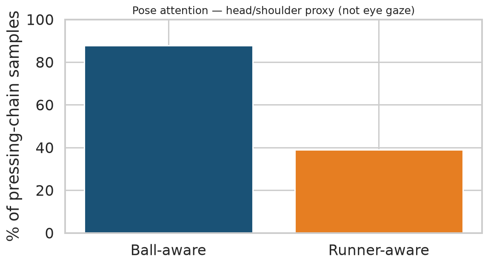
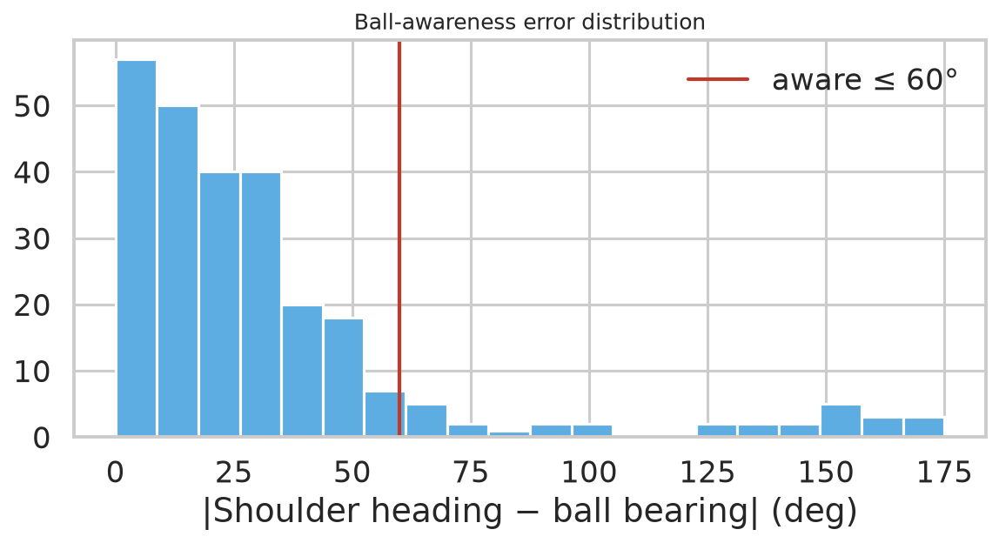

| Match | Frame | Ball-aware | Runner-aware | Scan lag (frames) | Ball err° |
|---|---|---|---|---|---|
| 1925299 | 222 | 1 | nan | nan | 32.5 |
| 1925299 | 243 | 1 | 0.0 | 3.0 | 48.3 |
| 1925299 | 257 | 1 | 0.0 | 15.0 | 29.1 |
| 1925299 | 261 | 0 | nan | nan | 152.8 |
| 1925299 | 1814 | 0 | nan | nan | 63.9 |
| 1925299 | 1831 | 1 | nan | nan | 4.8 |
| 1925299 | 1838 | 1 | nan | nan | 14.8 |
| 1925299 | 2346 | 1 | nan | nan | 20.8 |
| 1925299 | 2373 | 1 | 1.0 | 1.0 | 13.6 |
| 1925299 | 2662 | 1 | 1.0 | 0.0 | 16.9 |
| 1925299 | 2685 | 1 | 1.0 | 1.0 | 25.2 |
| 1925299 | 2715 | 1 | 1.0 | 1.0 | 39.5 |
| 1925299 | 2806 | 1 | nan | nan | 22.8 |
| 1925299 | 2843 | 1 | nan | nan | 28.8 |
| 1925299 | 3568 | 1 | nan | nan | 29.8 |
| 1925299 | 3625 | 0 | 0.0 | 3.0 | 127.3 |
| 1925299 | 3661 | 1 | 1.0 | 1.0 | 44.1 |
| 1925299 | 3683 | 1 | 1.0 | 1.0 | 39.9 |
| 1925299 | 5174 | 0 | nan | nan | 150.9 |
| 1925299 | 5243 | 1 | nan | nan | 24.9 |
| 1925299 | 5262 | 1 | nan | nan | 7.2 |
| 1925299 | 5971 | 0 | 1.0 | 1.0 | 60.6 |
| 1925299 | 6004 | 1 | nan | nan | 33.1 |
| 1925299 | 6454 | 1 | 1.0 | 0.0 | 4.8 |
| 1925299 | 6477 | 1 | nan | nan | 8.5 |
| 1925299 | 6499 | 1 | 0.0 | 3.0 | 10.4 |
| 1925299 | 6560 | 1 | nan | nan | 12.4 |
| 1925299 | 7259 | 0 | nan | nan | 174.6 |
| 1925299 | 7298 | 1 | nan | nan | 15.9 |
| 1925299 | 7509 | 1 | nan | nan | 11.5 |
huggingface-cli download SkillCorner/opendata-bodypose raw/1925299.jsonl.zip
--repo-type dataset --local-dir data/bodypose